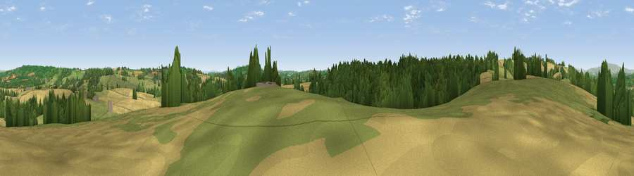

Viewpoint near Thornbury
#20939 in England · top 54% of its area beats it · near Thornbury · path 138 mWhere it is
The exact computed spot (SO 64525 58975). Click the marker for map links.
Public access: the nearest public right of way is about 138 m away — the final stretch may cross private land. Computed from Natural England's CRoW access layer and OpenStreetMap rights of way — not the legal definitive map. Always verify locally.
The view, rendered

A 360° render of this exact spot computed from the terrain model, tree cover and land cover — summer colours, afternoon light, calibrated against photographs of famous viewpoints. Real trees, hedges and buildings will differ in detail.
The panorama
Grey silhouette: terrain skyline in each direction (720 bearings, Earth curvature and refraction included). Dashed green: skyline with trees (+15 m) and buildings (+8 m) as obstacles. Blue strip: how far the ground is visible on each bearing.
Where the view opens
Wedge length = distance to the farthest visible ground on that bearing (vegetation-aware). Rings at 10, 25 and 50 km.
What fills the view
36% grassland · 35% cropland · 28% woodland ·
Angular shares of the visible panorama (visual magnitude), not map area. Landscape diversity 0.49 (0–1 Shannon).
Key numbers
More beautiful places nearby
The staircase of upgrades: each row has a higher view potential than everything closer. Driving times are estimates from straight-line distance, calibrated against real road routing — check an actual route before setting out.
| Place | Direction | Drive | Score |
|---|---|---|---|
| Viewpoint near Thornbury | WNW · 1 km | ~4 min | 58.3 |
| Viewpoint near Tedstone Wafre | E · 4 km | ~9 min | 68.3 |
| Viewpoint near Bromyard | SE · 5 km | ~10 min | 72.6 |
| Viewpoint near Pencombe | SW · 8 km | ~16 min | 72.8 |
| Viewpoint near Martley | E · 10 km | ~19 min | 78.1 |
| Woodbury Hill | ENE · 12 km | ~22 min | 81.6 |
| Viewpoint near Great Witley | ENE · 12 km | ~22 min | 83.4 |
| North Hill | SE · 18 km | ~31 min | 86.8 |
52.22783, -2.52079 · source: screening · position refined by local search. Computed location — check access rights before visiting.